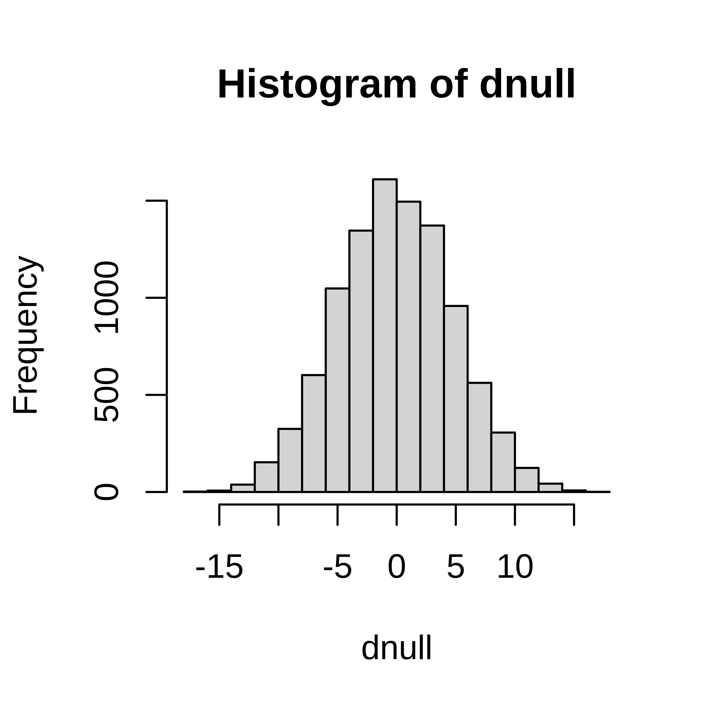

Exercises: Hypothesis tests, resampling
Exercise 1.1 You believe that the proportion of Swedish students allergic to pollen is greater than 0.3 (the proportion allergic to pollen in Sweden). To test this you observe 20 people in a student group at BMC in Uppsala, 9 or them are allergic to pollen. Is this reason to believe that the proportion of Swedish students allergic to pollen i greater than 0.3?
Can you identify any problems with this study setup?Exercise 1.2 A diet study aims to study how the hemoglobin (Hb) levels in blood are affected by an iron-rich diet consisting of tofu, soybeans, broccoli, lentils and peas. To perform the study the dietician has recruited 40 male participants, who are randomly assigned to the iron-rich diet or control group (no change in participants diet), 20 participant in each group.
The observed Hb levels (in g/L);ctrl <- c(197, 186, 157, 170, 193, 188, 175, 186, 177, 191, 168, 193, 191, 189, 188, 192, 179, 186, 197, 203)
iron <- c(187, 218, 196, 210, 206, 178, 181, 193, 172, 202, 169, 221, 183, 222, 185, 174, 192, 192, 162, 211)Perform a hypothesis test to investigate if the Hb level is affected (increased or decreased) by the iron-rich diet.
Solution
Define \(H_0\) and \(H_1\)
\(H_0: \mu_{diet} = \mu_{ctrl}\) No difference in mean iron level between control group and iron rich group
\(H_1: \mu_{diet} \neq \mu_{ctrl}\)
Select test statistic \(D = \bar X_d - \bar X_c\), where \(\bar X_c\) is the mean iron level in a control group of 20 people and \(\ bar X_d\) is the mean iro level in a diet group of 20 people.
The observed value; \(d_{obs}\)
mdiet <- mean(iron)
mctrl <- mean(ctrl)
dobs <- mdiet - mctrlCompute null distribution
## Under null all observations are equivalent
allobs <- c(iron, ctrl)
dnull <- replicate(10000, {
##Permute the 40 observations and assign the 20 first to the iron group
x <- sample(allobs)
d <- mean(x[1:20]) - mean(x[21:40])
})
hist(dnull)
Will use the significance level, \(\alpha=0.05\)
Compute p-value;
(p <- mean(dnull >= abs(dobs)))## [1] 0.0645As \(p>\alpha\), the null hypothesis is accepted, i.e. there is no reason to believe that the iron-rich diet affects the iron level.